7 Token-level predictors
7.1 Context and composition
Recall that token-level variables are attributes of the specific context of the corpus hit. To measure them, we need to inspect the environment of a particular instance. In natural (observational) data settings, the token-level variables are free to vary over clusters. This is true for both clustering variables, Item and Speaker. For instance, words may differ in the types of contexts in which they occur - they may partake in different syntactic constructions, they may differ in collocational preferences, etc. It seems that in many cases we would in fact expect words to differ, perhaps systematically, in their co-textual surroundings, or milieu. This possibility, which often turns out to be a reality, forms the backbone of the present chapter.
Let us start by introducing terminology. We will use the term context to refer to the immediate environment of a corpus hit, i.e. what we see when inspecting a concordance. Token-level variables are among the features that characterize the context. We now need a term for describing context-related differences between cluster, i.e. for describing the way in which, say, words vary in their surroundings. When describing such differences, we will talk about the composition of – or, equivalently, the makeup of the tokens belonging to – a particular word. We can therefore describe the composition of clusters with regard to different token-level variables.1 The composition of a word then reflects the within-word distribution of a given token-level predictor. In linguistic terms, it describes the co-textual milieu that is typical for this word in the corpus at hand. Put differently, the composition of a word for a specific token-level variable describes one particular aspect of the contexts to which this word is typically drawn. Of course, we may be interested in the composition of words along different lines, i.e. looking at different token-level variables.
1 Even though this term does not fit language data structures that weel, we nevertheless adopt it from the literature (cf. Diez Roux 2002). As a label, it is more transparent when considering human beings as tokens and higher-level units such as classrooms or school as clusters. Thus, it makes more sense to talk about the composition of class, or school, e.g. in terms of socio-economic characteristics of its students.
If clusters differ in composition, level-1 variables will vary both within and between clusters. In natural language data, it is often the case that the distribution of token-level predictor values varies from cluster to cluster. Statistically, differences in composition can be described as an association between token-level variable and clustering variable. The strength of this association reflects the degree of heterogeneity among clusters, i.e. to which extent they differ in the kinds of contexts in which they surface.
For language-internal clustering factors such as Item, variation in co-textual surroundings is to some extent systematic. This means, based on our knowledge about language (use), we can anticipate certain compositional differences among words, or, once they have been observed, they usually make sense. It is also of substantive interest, since the typical environment in which a word appears may have an influence on the behavior of this particular word. For instance, if a word such as trying tends to occur almost exclusively in contexts that are, for coarticulatory reasons, adverse to ing, this may, over generations of speakers, lead to a diachronic trend towards in.2 In contrast to Item, differences in composition among speakers will typically be haphazard, and of little substantive interest. Thus, we may observe that the tokens produced by a particular speaker differ from other speakers in our sample. It would usually seem, however, that this is reflects random, rather than systematic, variation.
2 See agent-based model.
- micro-scale vs. macro-scale
- studies discussing the possibility of contextual effects: Bybee 2002, Torres Cacoullos 199; cited in Barth & Kapatsinski 2014: 212-213
7.2 Differences in composition: Risks and opportunities
As we will discuss in the present chapter, situations where clusters differ in composition bear both risks and opportunities. On the one hand, we need to be cautious because a multilevel model may yield misleading patterns for a token-level predictor. As will be seen throughout the following sections, an uncarefully specified multilevel model will return an estimate for the token-level predictor that blends two types of comparison. Only if these two patterns are sufficiently similar is there no cause to worry. We therefore need to check whether the data suggest sufficient similarity, and whether we would expect different patterns on substantive grounds. We will see that, in cases where the patterns diverge, the course of action will depend on the underlying causal structure.3
3 Are experimental data really free from this bias threat?
On the other hand, the two types of comparisons, or patterns, that we have loosely referred to so far, open up new and linguistically meaningful dimensions of variation for theoretical description and empirical analysis. To this end, multilevel models are a critical tool, since it is difficult (if not impossible) to separate these two types of pattern using other data-analytic techniques. Again, however, the linguistic interpretation we may attach to these comparisons depends on the underlying causal structure.
We begin by illustrating the difference between these two types of patterns, first using synthetic data and then turning to the ING data.
7.3 Within- and between-comparisons: Illustration using synthetic data
Consider, as an example, a hypothetical data set of 20 words. There is a binary token-level predictor, with one category favorable to ing and the other category unfavorable to ing.
7.3.1 Composition of clusters
The composition of clusters - i.e. words - with respect to this binary predictor varies: The proportion of favorable contexts ranges from .08 to .94. The differences in composition are shown graphically in Figure 7.1. Panel (a) shows the composition of the 20 verbs using a bar chart. Words are ordered by the proportion of favorable contexts, which are shown with gray fill color. Most words are attracted to favorable contexts. Panel (b) shows a more compact display of this distribution: Each word is represented by a filled circle, which indicates its composition, i.e. its share of favorable contexts. Note that the y-axis label has changed accordingly. In what follows, we will usually prefer compact displays of this kind. Panel (b) also introduces two useful terms: The word-specific average for the token predictor will be referred to as the cluster mean. The average over all tokens in the data set, ignoring cluster membership, is called the overall mean. Here, the overall mean is identical to the grand mean, which is the average of the cluster means, disregarding the number of tokens per cluster.4
4 The distinction between the overall and the grand mean is not usually made in the literature, but it is a useful distinction in observational, unbalanced data settings, since the two measures may differ.
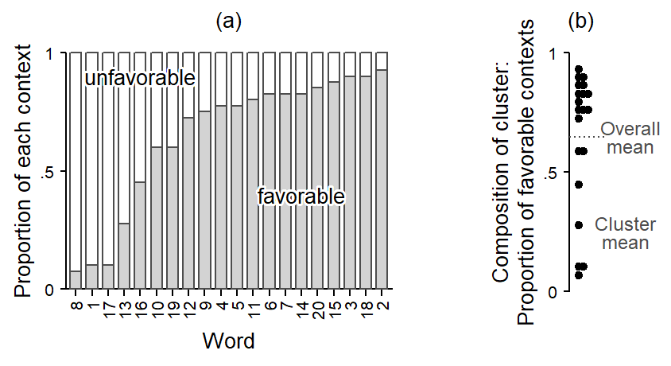
Whenever clusters differ in composition, a token-level predictor varies at two levels. First, it varies within clusters: For a specific cluster, some tokens appear in favorable contexts, others in unfavorable contexts. Further, it varies between clusters: Favorable contexts may be overrepresented in some clusters relative to others. In other words, with regard to our token-level predictor, clusters differ in composition. Let us extend our terminology: When clusters differ in composition, as in Figure 7.1, the variation of the token-level predictor can be partitioned, or decomposed into two components, a within-cluster component and a between-cluster component (cf. Neuhaus and Kalbfleisch 1998).
It is informative to summarize and compare the two components. One way to go about this is to fit a variance components model (i.e. a multilevel model) to the token-level variable, with a variance component (i.e. random intercept) for Item (see Section data-structure-systematic-component). This gives us the following measures of variation, expressed on the proportion scale:5
5 As a further measure of variation, the intraclass correlation is 0.18.
- Overall SD: 0.49
- Within SD: 0.28
- Between SD: 0.18
This allows us to compare the two components. A between SD close to zero would indicate that differences in composition may be negligible - which is not the case in our illustrative example. In data settings where we are dealing with two clustering factors, a further informative comparison is that of the two between SDs, one for each clustering variable. Far language data settings, we would expect the between SD for Item to be larger than that for Speaker.
Token-level variables that vary both within and between clusters can be studied at these two levels. First, we can take a purely within-cluster perspective and look at the pattern the token-level predictor forms in a specific cluster (i.e. Speaker or Item). We can also take a between-cluster perspective and study a token-level predictor at level 2. We would then be interested in whether the observed differences between clusters in terms of the outcome proportion are in line with the observed within-cluster patterns. Put differently, we may examine whether within-cluster patterns extend in a direct manner to the higher level. In the illustrative example at hand, we would expect the raw outcome proportions for the individual words in our example to reflect differences in composition, with words that tend to occur in favorable contexts showing a higher proportion of ing, on average.
7.3.2 Within-cluster differences
Let us first consider the within-cluster perspective. To this end, we can compare, separately for each word, the share of ing in favorable vs. unfavorable contexts. In panel (a) in Figure 7.2, each word is represented by a line that connects the observed proportion of ing in these two contexts. Such a plot is sometimes referred to as a spaghetti plot. All lines, except for one, slope upwards, indicating a higher share of ing in favorable contexts - as expected. Panel (b) directly shows the word-specific differences between these two contexts; words do not appear in a specific order. We can see that (again with the exception of one word) all differences are positive, indicating a consistent pattern across words: Tokens in favorable contexts show higher shares of ing. The observed differences average at about .40. At the right margin of panel (b), the distribution of differences is summarized with a dot diagram. This diagram brings into view the variation among clusters in the within-differences.
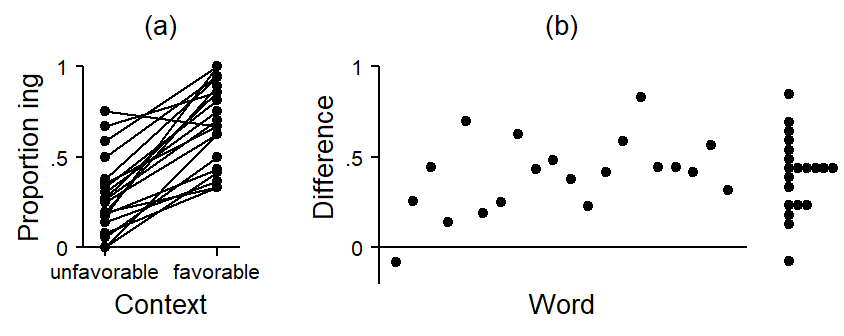
For the estimation of within-cluster differences using regression modeling, we have various options. Further below, we will see how to isolate within-cluster comparisons using multilevel modeling. Here, we note that there are alternative strategies. Thus, within-differences can be estimated with a fixed-effects regression model, where either (i) the clustering variable (i.e. Item) is added as a fixed predictor or, alternatively, (ii) all level-1 variables and the outcome are de-meaned, i.e. the regression is run on mean-centered deviation scores for these variables.6. These approaches implicitly control for level-2 predictors, both observed and unobserved, because characteristics of clusters are held constant in the comparison via (i) the fixed effects, or (ii) by subtracting cluster means prior to modeling. In a way, each cluster serves as their own control.
6 On these approaches, see Rabe-Hesketh and Skrondal (2021), p. 162. This strategy is popular in disciplines where research interest is exclusively in within-cluster patterns. Examples are econometrics, applied research in public policy, and longitudinal and panel data modeling more generally (cf. Schnuck and Perales 2017, 95).
7.3.3 Between-cluster differences
Next, we consider the between-cluster perspective. Panel (a) in Figure 7.3 shows the 20 verbs in our data set. The y-axis represents the share of ing and the x-axis shows the composition of the word, i.e. the proportion of tokens that occur in favorable contexts. This is the same distribution that appeared in Figure 7.1. Thus, if the points were to be dropped onto the horizontal axis, they would form the dot diagram that we saw at the right margin in Figure 7.2. The trend line gives a summary of the pattern in the plot, i.e. it shows how the average share of ing varies across different compositions: Verbs that predominantly feature in favorable contexts tend to show a higher share of -ing. Given the within-cluster patterns that we just saw in Figure 7.2, this makes sense. Looked at from a different perspective, the token-level predictor accounts for some of the variability that we observe among the words in terms of the share of ing.7 It helps us understand the observed variation among words in terms of the outcome proportion a little better.8
7 We can compare the variability among words before and after adjusting for the token-level predictor. This tells us how much of the raw variation may be attributed to differences in composition. To this end, we compute a ratio of two random-intercept variances: the one from a model including the token-level predictor divided by that not including the token-level predictor (see Bingenheimer and Raudenbush 2004, 61). Here, this ratio is 0.86, which means that 0.14 of the variation among words is accounted for by differences in composition.
8 The distributional properties of a word can be considered part of its inherent characteristics.
It is often informative to ask about the amount of variation among verbs that remains after we adjust for differences in composition, i.e. the observed imbalance in token-level predictors. This adjusted estimate is a better representation of what is idiosyncratic about a word, or, at a different level of description, the the amount of unexplained variability among words that is not accounted for by the predictors in our model. We can use the model to compute adjusted cluster means, which reflect, for each specific word, the expected share of ing if the proportion of favorable contexts were equal across all words. To arrive at this adjusted estimate, we need to take into account the within-cluster difference between favorable and unfavorable contexts.
Panel (b) in Figure 7.3 illustrates the adjustment we are making. The filled circles are the same ones as in panel (a). They represent the observed share of ing plotted against the composition of the cluster. For our adjustment, we first overlay, for each word, a model-based regression line that covers its location in the scatter plot. On the model scale (here: logits), all regression lines have the same slope, which represents the observed within-cluster difference. On the data scale (here: proportions), we end up with a set of curves. Now, each word is sitting on a grey curve. This curve traces, for this specific word, the expected overall share of ing for the range of possible compositions. Thus, shifting a given point along its line, we can determine its model-implied share of ing for different proportions of favorable and unfavorable contexts.
We can set cluster composition to a fixed value across all clusters and thereby remove from the raw proportion of ing for each word the variation that may be linked to the within-cluster differences. We are adjusting for the observed imbalance. In order to do so, we need to pick a reference composition. There are different options. Here, we take the value representing a balanced distribution of favorable and unfavorable contexts (both 50%).9 The blue curve in the center represents the within-cluster difference of the token-level predictor. It connects values of about .25 (left-hand side) and .70 (right-hand side), producing an absolute difference corresponding to the one we saw in Figure 7.2. This line represents a regression slope and was determined with a logistic regression model. Note that this slope expresses differences on the logit scale, but we have instead plotted on the probability scale. As a result, curves closer to 0 or 1 become flatter.
9 For this comparison, it would also make sense to use the grand mean.
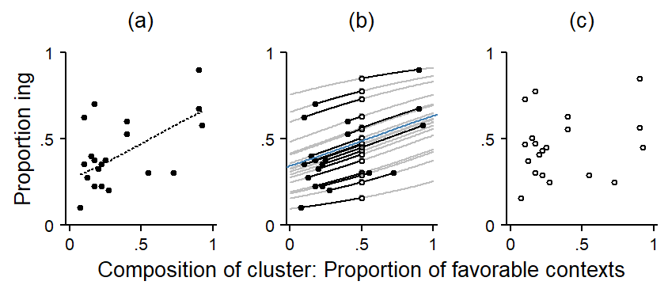
This leaves us with a set of adjusted cluster estimates. Panel (c) takes these adjusted estimates and plots them (again) against the composition of the cluster. After adjusting for the within-cluster differences, there is little systematic variation left – the slope of the regression line is close to zero. This indicates that the pattern in panel (a) reflects within-cluster differences only. Once these are subtracted out, the clusters no longer vary systematically across different compositions. The pattern in panel (a) is then referred to as reflecting a compositional effect.10 Compositional effects are those differences among clusters that are due to differences among clusters in the distribution of level-1 variables.
10 This use of the term compositional effect follows Rabe-Hesketh and Skrondal (2021).
11 The term contextual effect is used differently in the literature (see Diez Roux 2002). We follow Castellano, Rabe-Hesketh, and Skrondal (2014) and Rabe-Hesketh and Skrondal (2021), p. 167 and make a distinction between a contextual effect and a compositional effect. Note that some authors use these terms interchangeably (e.g. Raudenbush and Bryk 2002, 140).
It could also be the case, however, that after adjusting for the within-cluster difference, the residual variation among words still shows systematic patterns when drawn against cluster composition. This would indicate that the token-level predictor produces different patterns at these levels, since the within-cluster pattern would differ from the between-cluster pattern. The discrepancy between the two is often referred to as a contextual effect.11
7.3.4 Comparison of between-cluster and within-cluster differences
We can inspect the agreement between the within-cluster pattern and the between-cluster pattern by plotting them into the same display. That is, we directly compare the dashed curve from Figure 7.3 a to the blue curve in Figure 7.3 b. This comparison appears in Figure 7.4, where the between-pattern is shown as a dashed line and the within-pattern as a solid line. Note that the line for the between-pattern only covers the range of compositions supported by the data.
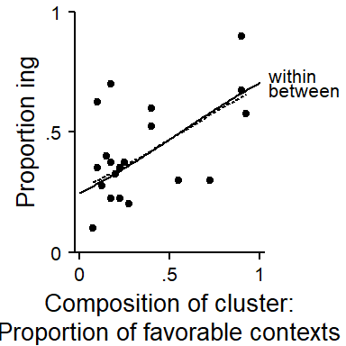
7.4 Within- and between-comparisons: Illustration using the ING data
Let us consider the token-level predictor Following Context. To keep the following illustration simple, we will first reduce this variable to a binary distinction between contexts favorable to -ing (pause, velar), and contexts favorable to -in (coronal, other). In the next section, we will represent all four contexts.
7.4.1 Composition of clusters
Let us start by looking at the composition of clusters with regard to phonetic context. Recall that it only makes sense to distinguish level-specific patterns if there is variation in the composition of clusters. Thus, words might differ in their distribution across favorable and unfavorable contexts – that is, some words may occur more often in favorable contexts. For speakers, a similar situation may hold: Some speakers may happen to produce a higher number of tokens in favorable contexts than others. Whereas it is reasonable to consider variation among speakers as an unsystematic, erratic feature of the data, we would in fact expect systematic differences between words, perhaps because of their word class or their collocational preferences.
Figure 7.5 shows the variation in composition among speakers and words. First, we note that, in general, the distribution of tokens in the data set is clearly inclined towards unfavorable contexts. For speakers, we observe variation in composition from close to 0 to about 30 percent of tokens in favorable contexts. For words, the variation is larger. Note that we are only showing items here that occur at least 10 times in the data. Further, we have varied the fill color of the data points to give a rough reflection of the word-specific token count. Compositions represented with lighter fill colors show an increasing susceptibility to sampling variation – that is, their composition may not have been estimated with great precision.
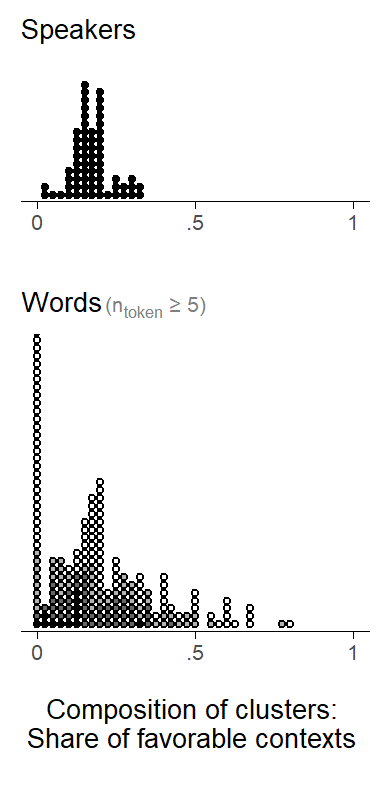
(ref:tab-ing-foll-cont-SDs) Token-level predictor : Variation between and within clusters.
To offer a more complete summary of these components of variation, let us consider the set of standard deviations. The overall SD is at 0.38, the within SD at 0.24. We have a between SD for each clustering variable: For Speaker, the between cluster variability is much smaller than for Item (0.05 vs. 0.13).
7.4.2 Within-cluster differences
Since we have two clustering factors (Speaker and Item), there are, in principle, two kinds of clusters that we can consider for within-cluster comparisons. Let us compute, for each cluster, a simple difference, between the share of ing in favorable vs. unfavorable contexts. This gives us, for each clustering variable, a distribution of within-differences. These distributions are shown in Figure 7.6. For words, we restrict our attention to types that occur at least 5 times in the corpus.
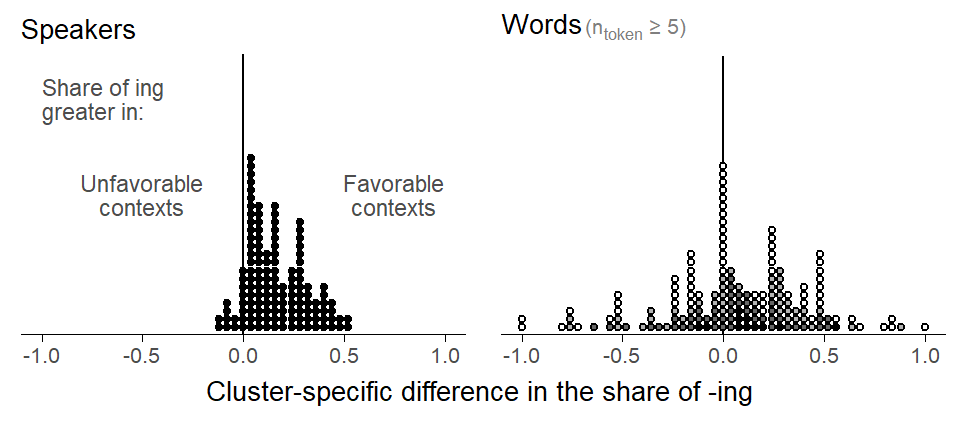
For speakers, differences range between -.10 and +.50, with an average of about 0.17. We interpret this as the average within-word difference in proportion ing between favorable and unfavorable contexts. For words, the distribution of differences is wider, with an average of 0.06. What the shows are crude estimates of the within-cluster differences. The within-effect can be interpreted as the difference in the proportion of ing between contexts (coronal, other, pause, velar) for a given word.
7.4.3 Between-cluster differences
Next, let us plot the cluster-specific proportion of -ing against the cluster-specific percentage of tokens in favorable contexts. We would expect to see an association that is consistent with the within-cluster differences we observed above. We will use a bubble chart to show the data, to bring into view the different cluster sizes.
In Figure 7.7, each circle represent a cluster. The size of the circle is proportional to the number of tokens for a specific cluster. For Speaker, cluster sizes do not vary much (cf. Figure 4.1). For the clustering variable Item, however, the skewed distribution of token counts (cf. Figure 4.2) surfaces in “bubbles” of widely varying size.
Let us consider the patterns in the plots. The dotted trend lines represent the model-based within-comparison. Looking at the distribution of points for speakers, it is difficult to make out a pattern in the plot. The between-pattern is summarized by a solid trend line, which seems to be dominated by a handful of speakers sitting at the extremes with respect to both the share of favorable contexts and the overall proportion of ing. Since the cluster compositions are probably the result of chance fluctuations, we should hesitate to “believe” the trend line. The fact that the trend is reversed compared to the within-pattern also raises doubts.
For words, on the other hand, the distribution of points seems to be summarized quite well by the solid trend line: Words that have a stronger tendency to occur in favorable contexts also have a higher share of -ing, on average. The directionality of this pattern is consistent with the observed within-cluster differences.
Warning: Using `size` aesthetic for lines was deprecated in ggplot2 3.4.0.
ℹ Please use `linewidth` instead.Warning: The following aesthetics were dropped during statistical transformation: size.
ℹ This can happen when ggplot fails to infer the correct grouping structure in
the data.
ℹ Did you forget to specify a `group` aesthetic or to convert a numerical
variable into a factor?
The following aesthetics were dropped during statistical transformation: size.
ℹ This can happen when ggplot fails to infer the correct grouping structure in
the data.
ℹ Did you forget to specify a `group` aesthetic or to convert a numerical
variable into a factor?
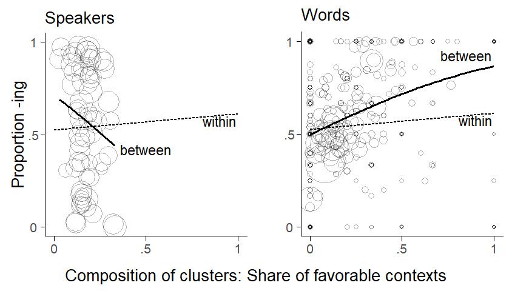
For Item, the between-trend is steeper than the within-trend. This indicates that the between-pattern is unlikely to be purely compositional. A multilevel regression model can represent these two curves with different coefficients, which allows us to compare numbers reflecting the steepness of the trend lines. In the present case, they are perceptibly different – the between-word difference is larger than the within-word difference.12 This means that an association between the composition of words and the outcome quantity persists once the estimates are adjusted for within-differences linked to the token-level predictor. This discrepancy may represent a contextual effect. As we will discuss further below, the interpretation of divergent between- and within-differences as contextual effects hinges on a number of causal assumptions. Importantly, however, the existence of a contextual effect also needs to make sense on linguistic grounds.
12 This is also reflected in the amount by which the random intercept SD decreases: Including the token-level predictor into the model leads to only a minor decrease, since the variability among words when account is taken of composition almost remains unchanged. In other words, the residual variation among words that is independent of contextual make-up. As mentioned above, a useful measure is the ratio of the random intercept variance before/after adjusting for level-1 covariates (Bingenheimer and Raudenbush 2004: p. 61).
7.5 Interpretation of between and within comparisons
Before we go about splitting between- and within patterns, and attaching different interpretations to each, we need to be convinced that differences in composition really exist among clusters. There are two sources of information we can rely on: our subject-matter knowledge and the information in the data. As for empirical hints about the reality of compositional variation, we can look at the amount of between-cluster variation, which is reflected in the between-SD, compared with the within-.cluster variation. We could also attempt an inferential assessment, asking whether a variance component representing between-cluster variability improves model fit. Ultimately, however, we should think about whether it makes sense for clusters to vary in their distribution of token-level predictors. In our case, it seems difficult to explain why speakers should vary systematically in terms of the kinds of contexts in which they use words ending in -ing. For words, however, it does not take much to convince ourselves that there are real differences among words. These linguistic assessments find support in the descriptive assessments of the between-cluster SDs: Variation among words is greater than among speakers (0.13 vs. 0.05), the latter being quite small. We will therefore focus on potential contextual differences for Item.
The interpretation of differences in within and between comparisons greatly depends on the underlying subject matter. It seems, however, that we would need a convincing story for why contextual differences should exist.
The story of trying and going…
We can formalize and check the coherence of our story using agent-based modeling.
A look at the literature also shows that disciplines differ in the emphasis they attach to these two types of comparisons. Some consider within-comparisons as the primary target of inference. This is often the case in econometrics or public policy, where interest lies in isolating the effect of different potential interventions at the level of the individual (the level-1 unit in these settings). This is because relevant decisions are made by individuals. In other research traditions, contextual effects are of substantive interest. Examples are education and public health.
Interpretation of compositional effects: We probably wouldn’t go as far as saying that, in cases where differences between words reduce to the compositional effect, the observed between-word differences are an artefact of differences in token-level composition. This is because the make-up is part of the word.
7.6 Model specification for between and within comparisons
A multilevel model allows us to decompose the association between a token-level predictor and the outcome into level-specific components. To make this split, the model must include cluster means for token-level variables as an additional level-2 variable. This means that, prior to modeling, we need to construct derived variables that represent cluster composition. This will always be some sort of cluster-specific average. For a quantitative predictor, it is the average over all tokens. For a binary predictor, it depends on how the variable is coded. Since all variables are coded in some numeric form, we still take an averge (e.g. over indicator dummy variables 0 and 1, or over sum contrasts -1 and +1).13 We will refer to these derived variables as cluster means.
13 The same is true for a categorical variable with \(k\) levels, where we average over each of the \(k - 1\) contrast variables.
For token-level variables whose cluster-means are included in the model, the model will return information about the relationship at two levels. What complicates matters slightly is that we now have two options for how the token-level predictor itself should be coded. There are two options. While these options essentially produce identical analyses, and produce the same coefficients for within-cluster comparisons, they return different coefficients for between-cluster comparisons. Somewhat counter-intuitively, then, the way in which we code the token-level predictor affects the meaning and interpretation of the between-cluster comparison.
7.6.1 Model specification: Two options
Let us first look at these two options and then consider differences in meaning. First, we can simply include the token-level predictor in its original form, i.e. without making any changes to it. The second option is to include a cluster-mean centered version of it. Token-level predictor values are then represented as deviations from their cluster-specific means.14
14 They are therefore also called mean-deviation variables, or de-meaned variables, or within-group deviation scores. The procedure is sometimes called within-group centering or centering within context.
15 The label between-within model appears to be due to Sjölander et al. (2013); this form is also referred to as the hybrid model (Allison 2009, 23). The Mundlak model is named after (Mundlak 1978); it is also referred to as the correlated random effects model (Wooldridge 2010, 286; Cameron and Trivedi 2005, 786) or the including-the-group-means approach (Castellano, Rabe-Hesketh, and Skrondal 2014, 335).
Along with its cluster means, a token-level predictor can therefore enter the model in its original form or its cluster-mean centered form. These formulations are referred to as the the Mundlak model (with the token-level predictor in its original form) between-within model (with the token-level predictor in its cluster-mean centered form).15 To reiterate, choosing between these two options has no effect on the within-cluster estimate; however, the meaning of the between-cluster coefficients will differ:
- Between-within model: Including the cluster-mean centered version of the token-level predictor will produce an estimate of the between-cluster comparison. In Figure 7.7) above, this is the slope of the between-cluster trend line.
- Mundlak model: Using the original form of the token-level predictor returns and estimate of the difference of the between-estimate and the within-estimate. In Figure 7.7), this is the differences between the two slopes. In that case, it signals how much steeper the between-trend is. Note that this differences corresponds to what is meant by a contextual effect. To obtain the between-cluster comparison, we have to add the two coefficients.16.
Here are the two model formulations in math notation: \[ \begin{aligned} y_{ij} &= \bar\alpha + \alpha_j + \beta^{\textrm{B}}\bar{x}_j + \beta^{\textrm{W}}(x_{ij}-\bar{x}_j) && \text{Between-within model} \\ y_{ij} &= \bar\alpha + \alpha_j + \beta^{\textrm{C}}\bar{x}_j + \beta^{\textrm{W}}x_{ij} && \text{Mundlak model} \end{aligned} \]
These two formulations yield identical estimates for within-comparisons - hence the identical label \(\beta^{\textrm{W}}\). The interpretation of the other coefficient differs, however: The between-within model returns the between-estimator \(\beta^{\textrm{B}}\) and the Mundlak model returns the contextual difference \(\beta^{\textrm{C}}\) (i.e. \(\beta^{\textrm{B}} - \beta^{\textrm{W}}\)). In general, then, there is a simple relationship between these coefficients: \(\beta^{\textrm{B}} = \beta^{\textrm{W}} + \beta^{\textrm{C}}\), or, equivalently, \(\beta^{\textrm{C}} = \beta^{\textrm{B}} - \beta^{\textrm{W}}\).
The meaning signaled by \(\beta^{\textrm{C}}\) is the change in outcome expected for a level-1 (a token) moving from one level-2 unit (i.e. word) to another. In our case, how does the probability of ing change for a specific token in the same context (i.e. with the same following context) if it occurs in another word which differs from the original word in composition only. The specific context in which the token occurs stays the same. \(\beta^{\textrm{B}}\), on the other hand, gives the expected change in the probability of observing ing when changing from one word to another word that differs in composition, without holding constant the specific context in which a word occurs. \(\beta^{\textrm{B}}\) therefore includes the token-level within-effect.
7.6.2 Choosing between the two specifications
If we understand which meaning is signaled by the coefficient attaching to the derived level-2 cluster-mean variable (i.e. \(\beta^{\textrm{B}}\) or \(\beta^{\textrm{C}}\)), there is little to choose between these two formulations. [Bell_etal2019, p. 1056] mention computational advantages of the between-within-specification.17 Which of the interpretations is more meaningful in substantive terms depends on the subject-matter context [see Bell_etal2019, p. 1056]. In some settings, it may not make sense to think of level-1 tokens as being able to change cluster membership. Then, the direct interpretation of \(\beta^{\textrm{C}}\) may not be directly meaningful. However, thinking of a token as being able to change cluster membership doesn’t seem too problematic for language data.
17 This is because cluster means and cluster-mean centered scores are uncorrelated.
On the other hand, it is sometimes argued that \(\beta^{\textrm{B}}\) offers a blend of two components that should be kept apart for interpretation. Thus, (Begg and Parides 2003, 2598–99) argue in favor of the Mundlak specification since they consider \(\beta^{\textrm{B}}\) in the between-within model to be vulnerable to misinterpretation. This is because it mixes two differences, the between- and the within-difference. The usual interpretation of regression coefficients as a change in the outcome associated with a one-unit increase in one specific predictor does not apply to \(\beta^{\textrm{B}}\), which signals the expected change in the outcome associated with a one-unit increase on both the within-cluster and the between-cluster level. Since we usually do not interpret coefficients but rather use model-based visualizations, we do not have a strong general position here.
Another advantage of the Mundlak formulation is that it returns \(\beta^{\textrm{C}}\) as an estimate of the difference of within- and between-patterns. On this scale, zero is an informative value, since it represents the absence of a contextual difference, i.e. the situation where between-cluster differences are due to differences in composition. The statistical uncertainty surrounding \(\beta^{\textrm{C}}\) permits the data to comment on the question whether there are contextual differences over and above compositional differences.18
18 This statistical assessment is of course also possible with the between-within model, but here this information is in the difference between two coefficients and therefore does not appear in the regression table.
A point that seems to have received less attention is the setting of cross-classified clustering structures, what may be particularly relevant for language data settings. The between-within specification would require us to derive cluster-mean centered variables with reference to two types of cluster membership. It is not immediately clear what such a centered variable should look like. The Mundlak model, in contrast, extends directly to cross-classified clustering factors: We can include the original token-level predictor along with two sets of cluster means – one for speakers, and one for words.
7.6.3 Failure to partition between- and within-differences
Let us compare the Mundlak and the between-within model to a multilevel model that does not include cluster means for the token-level predictor \(x_{ij}\): \[ y_{ij} = \bar\alpha + \alpha_j + \beta^*x_{ij} \]
If we do not partition token-level predictors into a between-cluster and a within-cluster component, a multilevel model will return a comparison that blends both differences. Thus, a model that does not include cluster means will not distinguish between \(\beta^{\textrm{W}}\) and \(\beta^{\textrm{C}}\) (or \(\beta^{\textrm{B}}\)). Instead, we will obtain the coefficient \(\beta^*\), which is intermediate between \(\beta^{\textrm{W}}\) and \(\beta^{\textrm{B}}\). More specifically, \(\beta^*\) is a weighted average of for \(\beta^{\textrm{W}}\) and \(\beta^{\textrm{B}}\), with the weights proportional to the precision of each (as reflected in their standard error). The combined estimate is closer to the difference that is estimated with greater precision, which is the within-difference (See Rabe-Hesketh and Skrondal 2021, 164–65). Here is the relationship between \(\beta^*\), \(\beta^{\textrm{B}}\), and \(\beta^{\textrm{W}}\) (see Raudenbush and Bryk 2002, 138–39): \[ \begin{aligned} \beta^* &= \frac{w_{\textrm{W}} \beta^{\textrm{W}} + w_{\textrm{B}} \beta^{\textrm{B}}}{w_{\textrm{W}} + w_{\textrm{B}}} && \text{Precision-weighted estimate for } \beta^* \\ w_{\textrm{W}} &= \frac{1}{(SE_{\beta^{\textrm{W}}})^2} && \text{Weight for within-component} \\ w_{\textrm{B}} &= \frac{1}{(SE_{\beta^{\textrm{B}}})^2} && \text{Weight for between-component} \\ SE_{\beta^*} &= \sqrt{\frac{1}{w_{\textrm{W}} + w_{\textrm{B}}}} && \text{Standard error for } \beta^* \end{aligned} \]
By blending relationships at two levels, \(\beta^*\) usually has no direct interpretation (Raudenbush and Bryk 2002, 138). If the between- and within-differences were very similar, however, \(\beta^*\) does reflect an interpretable comparison.19 To guard against inappropriately blending between- and within-comparisons, we can separate these comparisons in our multilevel model specification.20
19 This estimator has the additional advantage of being more efficient, i.e. yielding higher precision than alternative approaches that isolate the between- and within-components. This is because it combines information from two sources. See (Bell, Fairbrother, and Jones 2019, 1057; Rabe-Hesketh and Skrondal 2021, 165).
20 There is also a “test” for such situations, the Hausman test (Hausman 1978).
7.6.4 Example: Following context
For a concrete example, consider the token-level predictor Following Context. (tab-ing-b-bW-bB?) reports estimates from three different models. A multilevel model without cluster means returns \(\beta^*\), the conflated comparison. This difference is a weighted average of \(\beta^{\textrm{W}}\) and \(\beta^{\textrm{B}}\), the coefficients reported by the between-within model. \(\beta^*\) is closer to \(\beta^{\textrm{W}}\), the estimate with the smaller standard error (i.e. greater precision).
Figure 7.8 illustrates the relationship between the three estimates graphically. Each density curve represents a coefficients. The dispersion of the curve reföects the statistical uncertainty surrounding each estimate. We can see clearly that \(\beta^*\) is drawn heavily towards the more precise estimate of \(\beta^{\textrm{W}}\).
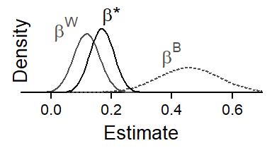
7.6.5 Simulation
In our illustrative data set, \(\beta^*\) ended up being quite close to \(\beta^{\textrm{W}}\), in which case concerns about bias are somewhat alleviated. \(\beta^*\) will usually be closer to \(\beta^{\textrm{W}}\), since this coefficient is typically estimated with higher precision. To form some intuition about the factors influencing the amount of bias in \(\beta^*\), let us run a simulation study. The amount by which \(\beta^*\) deviates from \(\beta^{\textrm{W}}\) depends on the relative precision of \(\beta^{\textrm{W}}\) and \(\beta^{\textrm{B}}\). We will vary three parameters: The number of tokens per cluster, the number of clusters, and the random intercept SD for the clusters.
Figure 7.8 shows the results of our simulation. The limits of the vertical axis denote the locations of the coefficients \(\beta^{\textrm{W}}\) (bottom) and \(\beta^{\textrm{B}}\) (top). The intermediate value of \(\beta^*\) for different simulated values is denoted by points. In both panels, the horizontal axis shows the most important parameter: the number of tokens per cluster. With only 2 tokens per cluster (at the left end of the scale), \(\beta^*\) lies roughly half-way in between the coefficients. As the number of tokens per cluster increases, \(\beta^{\textrm{W}}\) is estimated with higher precision; as a result, \(\beta^*\) approaches \(\beta^{\textrm{W}}\). Panel (a) shows an additional parameter: the number of clusters. With more clusters, the precision of \(\beta^{\textrm{B}}\) increases, and \(\beta^*\) therefore moves toward \(\beta^{\textrm{B}}\). This influence only surfaces with lower token counts per cluster – at about 50 tokens per cluster, the number of clusters appears to be largely irrelevant under the conditions simulated here. Panel (b) shows the third parameter: the random intercept SD for clusters. As the variation among clusters decreases, \(\beta^{\textrm{B}}\) is estimated with higher precision and therefore exerts more pull on \(\beta^*\). With our current simulation settings, this influence is only felt for large numbers of tokens per cluster.
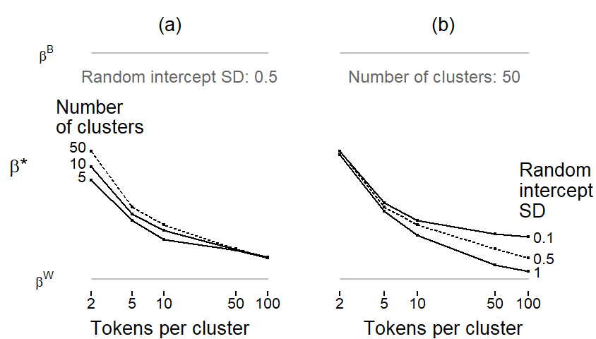
7.7 Causal assumptions for the identification of contextual effects
The interpretation of a difference in within- and between-coefficients as a contextual effect hinges on the absence of confounding. Unobserved confounders with an arrow pointing into X and Y can sit at level 2 (a word-level confounder) or at level 1 (a token-level confounder). These two scenarios are shown in Figure 7.10, where variables are arranged by the level at which they are measured: Level-1 variables appear at the bottom, level-2 variables at the top.
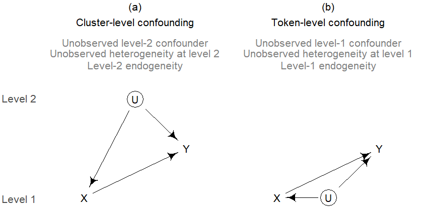
7.7.1 Token-level confounding
There is no easy fix for token-level confounding. It requires some form of instrumental-variables approach.
7.7.2 Cluster-level confounding
One assumption is that there are no unobserved word-level confounders, i.e. word-level predictors that have a causal effect on both X (the token-level predictor) and Y. A situation that would distort our estimates is shown in Figure 7.10 a, where U is the unobserved word-level confounder. We will refer to this situation as word-level unobserved confounding or word-level omitted variable bias. In the econometrics literature, this situation is called level-2 endogeneity.21
21 In that literature, endogeneity (i.e. unobserved confounding) is often described as a correlation between the predictor in question (here the token-level predictor) and an error term (here, the random intercept for word). The correlation arises because the error term contains the effects of unobserved confounders - thus, the word-level intercept reflects unobserved word-level predictors. This correlation is a consequence of the omitting a confounder. To make sense of the econometrics literature, we can establish the following mapping: level-2 endogeneity = correlation between predictor and random intercept = omitted variable bias due to unobserved level-2 confounder.
In such cases, the within-comparison can be consistently estimated by including mX, the cluster means of the token-level variable, as an additional predictor.22 The resulting DAG is shown in Figure 7.11. X denotes the token-level predictor, and mX the derived cluster means. These are shown on level 2, since they are cluster attributes. The dotted line connecting X and mX indicates the intrinsic link between the variables: mX is a derived variable, a summary measure of a token-level predictor.
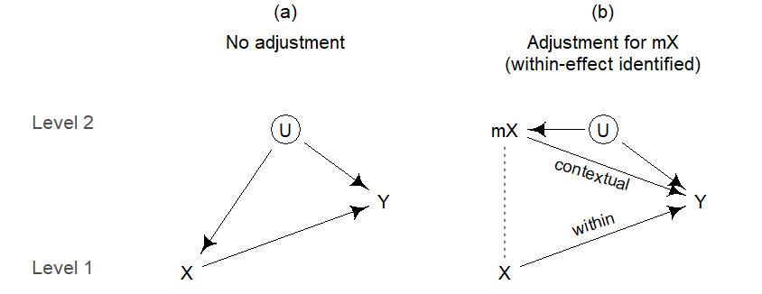
Adjusting for mX effectively closes the backdoor path from U into X. This is not immediately clear from our knowledge about conditional independencies in DAGs. We need new heuristics for denoting derived cluster means in a DAG. Since the value of a level-2 confounder U is constant across all tokens in a certain cluster, the influence of U on X will surface at the level of the cluster. The derived cluster means mX therefore block the causal effect a level-2 confounder has on X. By adjusting for mX, we are therefore able to remove the confounding bias from the within-effect, i.e. the arrow pointing from X into Y. This means that within-effects are identified. As Figure 7.11 b illustrates, the bias is assigned to mX. Now, only the effect of mX on Y is confounded by U.
For word-level unobserved confounding, here are the requirements for consistent estimation of our comparisons: (i) for \(\beta^*\), we need to adjust for U; (ii) for \(\beta^{\textrm{W}}\), we need to adjust for mX; and (iii) for \(\beta^{\textrm{B}}\), we need to adjust for U. If U is indeed unobserved, standard regression modeling can only arrive at consistent estimates of \(\beta^{\textrm{W}}\). All other parameters remain biased. Importantly, this bias propagates to the estimation of other cluster-level (i.e. level-2) predictors as well as cluster-specific parameters (e.g. random intercepts) and their associated hyperparameters (e.g. random intercept SD). These estimates remain biased even after adjusting for mX. This means that the between-comparison will still be confounded with the omitted level-2 predictors and therefore still be biased. (See Rabe-Hesketh and Skrondal 2021, 165).
The econometrics literature therefore cautions against using random effects when exogeneity assumptions are not met. Fixed-effects regression is recommended as an alternative approach.23 If there is level-2 endogeneity, a fixed-effects model can be used to arrive at consistent estimates of within-differences.24 For situations such as that depicted in Figure 7.11 a, fixed-effects regression (which includes the clustering variable as a factor) returns only \(\beta^{\textrm{W}}\), which is identical to \(\beta^{\textrm{W}}\) in the Mundlak or between-within model, i.e. a multilevel regression including cluster means. Since it is a fixed-effects regression, the biased parameters from the random-effects model are simply not estimated. \[ \begin{aligned} y_{ij} &\sim \textrm{Normal}(\mu_{ij}, \sigma) \\ \mu_{ij} &= \alpha_j^{\scriptsize{\textrm{FE}}} + \beta^{\textrm{W}}x_{ij} && \text{Fixed-effects} \\[14pt] y_{ij} &\sim \textrm{Normal}(\mu_{ij}, \sigma) \\ \mu_{ij} &= \alpha_j^{\scriptsize{\textrm{RE}}} + \beta^*x_{ij} && \text{Naive multilevel model} \\ \alpha_j^{\scriptsize{\textrm{RE}}} &\sim \textrm{Normal}(0, \sigma_{\alpha}) \\ \bar{\alpha} &= \gamma + \gamma^{\textrm{G}} G_j \\[14pt] y_{ij} &\sim \textrm{Normal}(\mu_{ij}, \sigma) \\ \mu_{ij} &= \alpha_j^{\scriptsize{\textrm{RE}}} + \beta^{\textrm{W}}(x_{ij} - \bar{x}_j) && \text{Mundlak model} \\ \alpha_j^{\scriptsize{\textrm{RE}}} &\sim \textrm{Normal}(\bar{\alpha}, \sigma_{\alpha}) \\ \bar{\alpha} &= \gamma + \beta^{\textrm{C}} \bar{x}_j + \gamma^{\textrm{G}} G_j \\[14pt] y_{ij} &\sim \textrm{Normal}(\mu_{ij}, \sigma) \\ \mu_{ij} &= \alpha_j^{\scriptsize{\textrm{RE}}} + \beta^{\textrm{W}}x_{ij} && \text{Between-within model} \\ \alpha_j^{\scriptsize{\textrm{RE}}} &\sim \textrm{Normal}(\bar{\alpha}, \sigma_{\alpha}) \\ \bar{\alpha} &= \gamma + \beta^{\textrm{B}}\bar{x}_j + \gamma^{\textrm{G}} G_j \end{aligned} \]
23 It is sometimes said that fixed-effects and random effects differ in that random effects assume zero correlation between the random effects and observed level-2 predictors (i.e. level-2 exogeneity), while fixed effects permit correlation between fixed effects and observed predictors. A correlation between the random effects and observed covariates reflects omitted variable bias.
24 There are two strategies: de-meaning and subject dummies (See Rabe-Hesketh and Skrondal 2021, 274–79).
Using a between-within (or Mundlak) model relaxes the assumption of level-2 exogeneity, i.e. that the random intercept is uncorrelated with the token-level predictor. This leads to consistent estimates for within-differences. (See Rabe-Hesketh and Skrondal 2021, 174). Yet, the estimates for cluster-level predictors and the random intercept SD are not consistently estimated (Ebbes, Böckenholt, and Wedel 2004, 166). This is because if the cluster means absorb causal information flowing from level-2 predictors. This means that the between-difference is contaminated by the absorbed information.
In situations where cluster-level unobserved confounding is suspected, the following advice can be given:
- A multilevel model without cluster means includes absolutely no precautions against bias.
- If interest lies exclusively in within-effects, we can use either fixed-effects regression or a multilevel model including cluster means (i.e. a Mundlak or between-within model).
- If we are also interested in parameters associated with level 2, we must understand that estimates from a multilevel model including cluster means are likely to be biased: This applies to (i) the random effects themselves, (ii) random effects hyper-parameters, and (iii) estimates for level-2 predictor, including the between-comparison and, alternatively, the contextual effect.
In short: Fixed-effects regression is save but limiting, and the naive use of multilevel models may lead to misleading interpretations.
For the ING data, we should therefore be asking whether the apparent contextual effect could reflect cluster-level confounding. Are there any word-level variables that have a causal effect on the response and on the token-level predictor. To rephrase, are there any unobserved word-level confounders that influence both the outcome and the composition of clusters. A candidate is Word Class: g-dropping is sensitive to word class, with verbs and gerunds showing a higher rate of g-dropping. The word class of a token will also have an influence on the Following Context, since word classes surface in different syntactic contexts, and there may be systematic differences in the kinds of words that tend to follow. If this is the case, we would be dealing with cluster-level confounding, or cluster-level omitted variable bias.25
25 In the econometrics jargon, we would state that the level-2 exogeneity assumption is violated.
7.7.3 Understanding bias
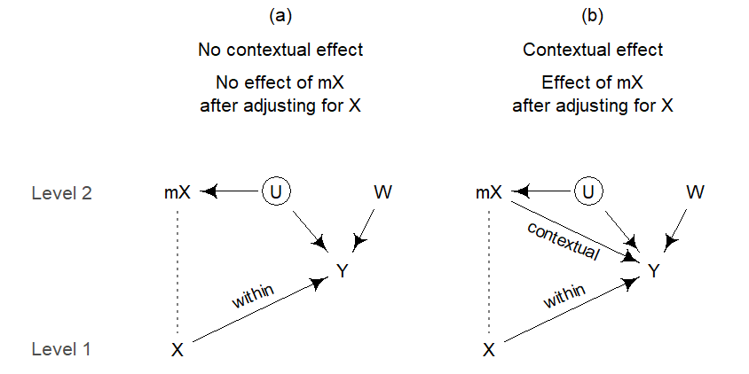
In setting (a), where there is no contextual effect, \(\gamma\), the coefficient for the cluster-level predictor \(W\), will be biased. The amount of bias in \(\gamma\), denoted as \(\delta_\gamma\), depends on (Castellano, Rabe-Hesketh, and Skrondal 2014, 348):
- the association between \(\bar{x}\) and \(U\) (\(\rho_{\bar{x}u}\))
- the association between \(\bar{x}\) and \(W\) (\(\rho_{\bar{x}w}\))
- the standard deviation of the random intercepts \(U\) (\(\sigma_u\))
- the standard deviation of \(W\) (\(\sigma_w\))
Here is the formula reported by Castellano, Rabe-Hesketh, and Skrondal (2014), p. 348:
\[ \delta_\gamma = \frac{-\rho_{\bar{x}u}\rho_{\bar{x}w}\sigma_u}{\sigma_w(1-\rho^2_{\bar{x}w})} \]
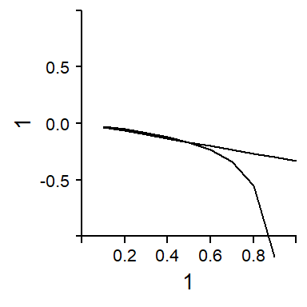
The two-step estimator or the Hausmann-Taylor estimator produce an unbiased estimate for \(\gamma^{G}\), the direct causal effect of \(W\) on \(Y\). An important aspect, however, is how the association between mX and W arises. Three possible underlying causal structures are shown in Figure 7.13. In panel (a) the association reflects a causal effect of \(W\) on \(X\), which then surfaces in \(\bar{x}\). Panel (b) show a scenario where the association is due to a common cause U, which may be sitting at Level 1 or Level 2. Finally, panel (c) shows a direct causal effect of \(X\) on \(W\), which gives rise to the association between \(\bar{x}\) and \(W\). In settings (a) and (b), \(\bar{x}\) is a collider on the path from \(U\) to \(W\). Adjusting for \(\bar{x}\) therefore opens a non-causal path that leads to bias in the direct causal effect of \(W\) on \(Y\). In these scenarios, we would like to obtain an unbiased estimate. In panel (c), however, adjusting for \(\bar{x}\) actually closes a backdoor path. Without this adjustment, our estimate of the direct causal effect of \(W\) on \(Y\) is confounded. This leads me to conclude that only scenarios (a) and (b) call for techniques such as 2S and HT.
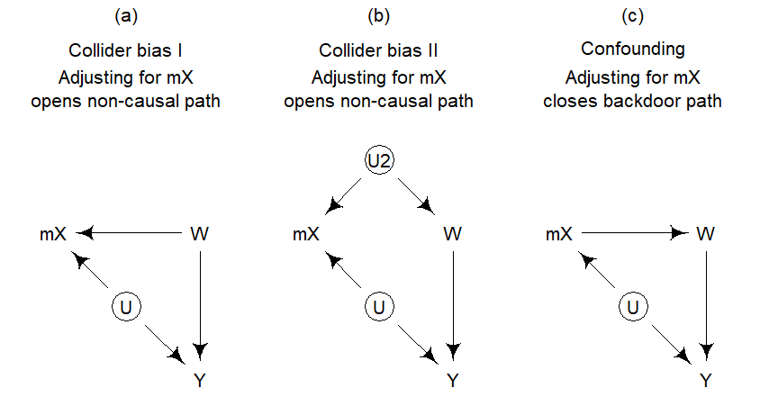
7.7.4 Simulation
Next, we carry out a bias analysis. We vary the parameters of the model to see what effect each one has on the amount of bias in the results.
7.7.5 Bias decreases with increasing cluster size
As cluster size increases, random intercept estimates approach their fixed counterparts. The bias in between-differences and other cluster-level predictors therefore decreases. As noted by (Rabe-Hesketh and Skrondal 2021, 178)
Let us run a bias analysis here:
7.7.6 Tools for consistent estimation
Under certain circumstances, there are strategies for obtaining consistent estimates for cluster-level coefficients. Thus, in cases where there is no contextual effect – i.e. where \(\beta^{\textrm{C}} = 0\) or, equivalently, \(\beta^{\textrm{W}} = \beta^{\textrm{B}}\) – we can obtain consistent estimates for cluster-level predictors (\(\gamma^{\textrm{G}}\)), cluster-specific intercepts (\(\alpha_j^{\scriptsize{\textrm{RE}}}\)) and the random-intercept variance (\(\sigma_{\alpha}\)). More specifically, we can strip from these estimates the amount of bias that is due exclusively to Level-2 endogeneity of the Level-1 predictor.
The general strategy is the following. We first obtain a consistent estimate of \(\hat\beta^{\textrm{W}}\) using one of the models discussed above. Recall that, apart from the naive multilevel model, all produce consistent estimates for \(\beta^{\textrm{W}}\). We then plug the estimate \(\hat\beta^{\textrm{W}}\) into the following equation to get consistent estimates for \(\gamma^{\textrm{G}}\), :
\[ \begin{aligned} y_{ij} - (\hat\beta^{\textrm{w}}x_{ij}) &\sim \textrm{Normal}(\mu_{ij}, \sigma) \\ \mu_{ij} &= \alpha_j^{\scriptsize{\textrm{RE}}} \\ \alpha_j^{\scriptsize{\textrm{RE}}} &\sim \textrm{Normal}(\bar{\alpha}, \sigma_{\alpha}) \\ \bar{\alpha} &= \gamma + \gamma^{\textrm{G}} G_j \end{aligned} \] We can preserve the uncertainty in \(\hat\beta^{\textrm{W}}\) with a Bayesian regression model.
7.8 Additional complexities
7.8.1 Correct specification of the between-pattern
In categorical regression models (e.g. logistic, multinomial, or count regression) the inclusion of cluster means may not reliably partition within- and between components in certain cases. For instance, if the association between cluster means and the outcome is non-linear but constrained by the model specification to linearity, the estimates for the within-cluster differences will be biased (Bell, Fairbrother, and Jones 2019, 1066; Palta and Seplaki 2003, 188; Schnuck and Perales 2017, 109). This is in contrast to ordinary linear regression. We should therefore be on the lookout for potential non-linearities during initial data analysis. As illustrated in Figure 7.14, we can add a flexible summary of the trend to our bubble chart, e.g. in the form of a smoother or spline. In Figure 7.14, where the grey trend line represents a fairly flexible spline with 3 knots, there is no indication of non-linearity.
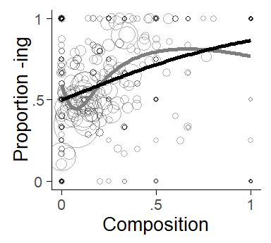
The between-cluster relationship may also show an interaction with other variables. It is usually best if interactions have a good linguistic footing, i.e. that there is reason to expect them on substantive grounds. For our illustrative case study, the data suggest an interaction between cluster means and frequency. Figure 7.15 divides words into three frequency bands using token counts of 5 and 20 as thresholds. We can see that the between-cluster trend is steeper among high-frequency words.
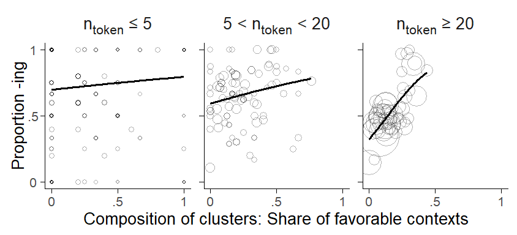
7.8.2 Population-averaged vs. cluster-specific estimates
- The difficulty of comparing population-averaged differences (between-differences) and cluster-specific differences (within-differences). (Neuhaus and Kalbfleisch 1998, 641) comment on this, but it seems that they miss the point that it does not make sense to interpret a between-subject difference on a subject-specific scale.
7.8.3 Crossed clustering structures
- Use of deviation variables impossible?
7.8.4 Random slopes
- What happens when we specify random slopes on \(\beta^*\)?
7.8.5 Contextual effects for categorical predictors
Token-level predictors can also be categorical, with 3 or more categories. This adds some complexity to the analysis since categorical predictors with \(k\) levels are represented in a regression model by \(k - 1\) contrasts. Binary and quantitative predictors can be represented in the model with one term. Cluster means then have to be included for each contrast, and we can distinguish within- and between-comparisons for each contrast. Graphically, we could therefore compare \(k - 1\) trend-lines, similar to our visualization of binary predictors. The disadvantage of this multi-panel approach is that the individual contrasts themselves show a specific fragment of the patterns formed by the categorical predictor. Depending on which kind of contrast coding is used, these fragments may not be directly informative. We therefore introduce another visualization technique, which allows us to draw a more comprehensive comparison of between- and within-patterns of categorical predictors.
We start by fitting a Mundlak (or, equivalently, a between-within) model to isolate the within-comparisons for the token-level predictor. We then use these coefficients to compute for each cluster, the predicted outcome based on the composition of the cluster. We first compute the predicted outcome for each category and then weight these based on their share among the tokens for a particular cluster. This produces a weighted average reflecting the compositional effect.
We are then ready to produce a plot similar to Figure 7.16: The horizontal axis shows the cluster-specific weighted average reflecting the compositional effect. In the present case, this is expressed on the log-odds (or logit) scale. The vertical axis represents the observed share of ing for each cluster. The dashed trend line denotes the expected trend among the clusters based on the compositional effect. It is the value on the x-axis expressed as a proportion.
The lower panel in Figure 7.16 shows the composition of the clusters. Thus, for each bubble in the top panel, the bottom panel shows four characters representing the share of each category: (c)oronal, o(t)her, (v)elar, (p)ause. Coronal contexts disfavor ing – words with high shares of pre-coronal tokens therefore appear towards the left end of the scale. A pause, on the other hand, favors ing. Words sitting at the right end of the scale therefore have a high share of pre-pausal tokens.
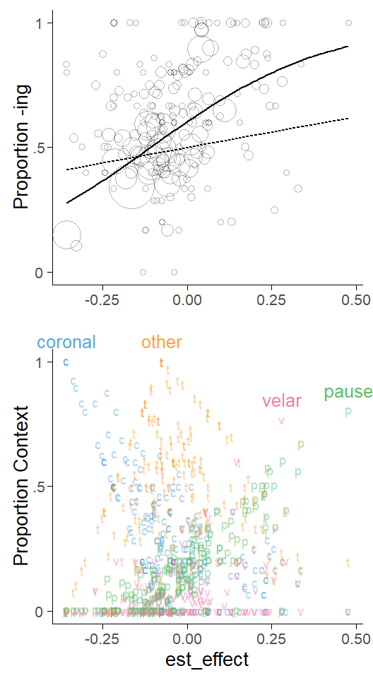
If the data show only a compositional, and no contextual, effect, the dashed trend line will give a good approximation of the patterns formed by the bubbles representing the clusters. In Figure 7.16, we have added a solid trend line that gives a simple summary of the actual pattern formed by the bubbles in the graph. Similar to Figure 7.7 above, this allows us to obtain a visual comparison of within- and between-patterns in the data.
7.9 Within- and between-effects and fallacies
The distinction between within- and between-effects is related to some well-known fallacies in clustered data structures. Thus, the ecological fallacy describes a situation where we base our analysis on cluster means of a token-level predictor and then interpret the estimates as a within-cluster effect. The atomistic fallacy, on the other hand, refers to the situation where we ignore the clustering and interpret effects as between-effects.
7.10 Tools
7.10.1 Plotting the composition of clusters using a dot diagram
To graph the composition of clusters, we first use the package dplyr to determine the cluster means for the token-level predictor, which is here denoted by X:
ing_sample %>%
group_by(word) %>%
summarize(mX = mean(X))This will return the following table:
# A tibble: 1,024 × 2
word_2 mX
<fct> <dbl>
1 going_verb -0.845
2 doing_verb -0.752
3 being_gerund -0.752
4 working_verb -0.811
5 trying_verb -1
6 being_verb -0.759
7 interesting_adjective -0.333
8 coming_verb -0.732
9 getting_verb -0.744
10 going_gerund -0.882
# ℹ 1,014 more rowsWe can pass this table on to a plotting call to produce a dot diagram. Before plotting, we filter out words that occur fewer than 5 times in the corpus.
ing_sample %>%
filter(frequency >=5) %>% # exclude words that occur fewer than 5 times
group_by(word) %>%
summarize(mX = mean(X)) %>%
ggplot(aes(x=mX)) +
geom_dotplot()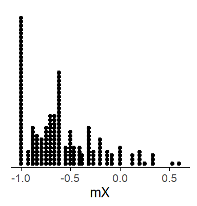
7.10.2 Exploring between-cluster trends using a bubble chart
To draw a bubble chart, we first use dplyr to calculate the necessary cluster-level statistics, i.e. cluster means for the token-level predictor (mX), overall token count in the data set (frequency) and the overall share of ing for the cluster (prop_ing).
ing_sample %>%
group_by(word) %>%
summarize(mX = mean(X),
prop_ing = sum(ing)/n(),
frequency = n())This will return the following table:
# A tibble: 1,024 × 4
word_2 mX prop_ing frequency
<fct> <dbl> <dbl> <int>
1 going_verb -0.845 0.345 386
2 doing_verb -0.752 0.438 226
3 being_gerund -0.752 0.578 161
4 working_verb -0.811 0.497 159
5 trying_verb -1 0.150 147
6 being_verb -0.759 0.481 133
7 interesting_adjective -0.333 0.894 132
8 coming_verb -0.732 0.354 127
9 getting_verb -0.744 0.592 125
10 going_gerund -0.882 0.445 119
# ℹ 1,014 more rowsThis table is then passed on to a plotting call to produce a bubble chart. In the ggplot call, we use the argument size to make the circles proportional to the token count. In geom_point the argument alpha serves to make the bubbles transparent. geom_smooth adds the trend line to the display, with a few additional settings to instruct R that we are looking at proportions (bounded by 0 and 1) and specify the weights for the data points (more frequent token have greater weight).
ing_sample %>%
group_by(word_2) %>%
summarize(mX = mean(foll_cont_bin_c),
prop_ing = sum(ing)/n(),
frequency = n()) %>%
ggplot(aes(x=mX, y=prop_ing, size=sqrt(frequency/pi))) +
geom_point(shape=1, alpha=.3) +
geom_smooth(method = "glm",
method.args = list(family = "binomial"),
aes(weight = frequency), se=F) +
scale_size_identity()
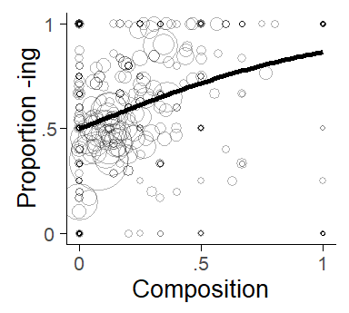
7.10.3 Recoding token-level predictors in R
To specify a between-within model and a Mundlak model, we need to add two new variables to our data frame: (i) cluster means mX and (ii) the cluster-mean centered version of the token-level predictor dX. We can do this using dplyr:
ing_sample %>%
group_by(word) %>%
mutate(mX = mean()) %>%
ungroup() %>%
mutate(dX = X - mX)This will return the following table:
# A tibble: 6,314 × 4
word_2 X mX dX
<fct> <dbl> <dbl> <dbl>
1 morning_noun -1 -0.489 -0.511
2 engineering_gerund -1 -0.125 -0.875
3 falling_verb -1 -1 0
4 walking_verb -1 -0.895 -0.105
5 working_gerund -1 -0.634 -0.366
6 trying_verb -1 -1 0
7 trying_verb -1 -1 0
8 trying_verb -1 -1 0
9 trying_verb -1 -1 0
10 going_verb -1 -0.845 -0.155
# ℹ 6,304 more rows7.10.4 Model syntax
Specifying the models is then straightforward with these new variables:
Between-within model:
glmer(ing ~ dX + mX + (1|word), data=ing_sample, family=binomial)Mundlak model:
glmer(ing ~ X + mX + (1|word), data=ing_sample, family=binomial)7.11 Literature on between- and within comparisons
Raudenbush & Willms 1995 How does this connect to Gelman & Hill (2007: 310-314) How does this connect to the BK plot (Wainer 2005, chapter 10)